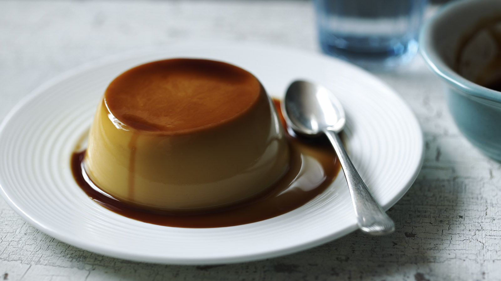

Creme Caramel

Description
Creme caramel belongs on the short list for 'World's Greatest Dessert.' The way the almost-burnt caramel layer gets fused on, and becomes one with, the creamy custard is nothing short of magic.
Ingredients
- cooking spray
- ½ cup (scant) white sugar
- 1 large egg
- 3 large egg yolks
- ¼ teaspoon salt
- ¼ cup white sugar
- ½ cup creme fraiche
- ½ cup whole milk
- 1 teaspoon vanilla extract
- ½ teaspoon orange cognac (such as Grand Marnier®)
Steps
- Preheat oven to 325 degrees F. Lightly spray 4 heatproof 6.5-oz. ramekins with vegetable spray. Place ramekins in a casserole dish.
- Place 1/2 cup sugar in a small, heavy, dry skillet over medium heat. When sugar begins to melt around the edges, gently shake the pan continually, swirling sugar around, until all the sugar melts; don't use utensils to stir. When sugar is completely melted and dark brown, remove the pan from heat.
- Quickly pour equal amounts of caramel syrup into the 4 prepared ramekins.
- Place 1 egg and 3 egg yolks in a bowl with a pinch of salt and 1/4 cup sugar. Whisk until sugar is dissolved and mixture becomes frothy, about 1 minute.
- Spoon the creme fraiche into the egg mixture; add the milk, vanilla, and Grand Marnier. Whisk together until ingredients are completely mixed.
- Ladle mixture into the prepared ramekins, filling them about 2/3 to 3/4 full.
- Fill casserole with hot tap water to reach halfway up the sides of the ramekins. Place casserole on middle rack of preheated oven.
- Bake until just barely set, 45 to 50 minutes. You can start checking for doneness at about 40 minutes.
- Using tongs, remove the ramekins from the casserole to a cooling rack. When just slightly warm, run a sharp paring knife around the edge of each custard.
- To unmold, cover ramekin with a small plate, then invert. Chill before serving.
Return to homepage